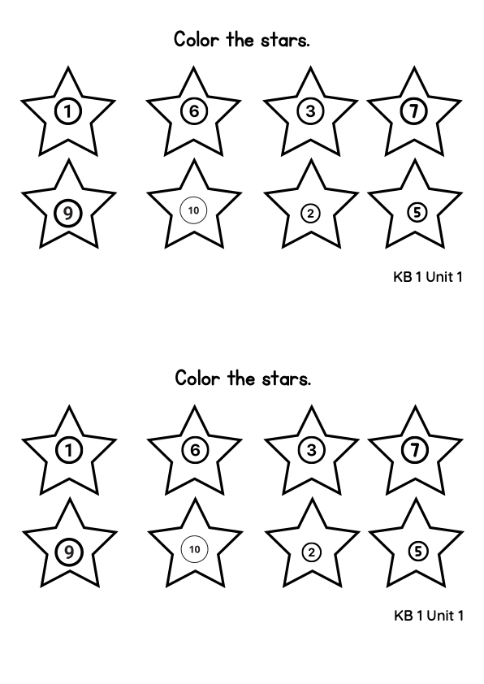

Kid's Box 1 (New Generation) · Unit 1 · Lesson 5 · KB1.1 · KB1.2 · KB1.3 — ~60 min
New letter Rr + our first test 🌟
Aim: introduce phonics Rr (rat · red · rug · rag), work PB/AB p. 8 — and run the Unit 1 evaluation test (old edition) as one calm, protected block. Their first test ever — slow, kind, celebratory.
MATERIALS — print & prepare ahead
📄 Test copies — ONE SET PER CHILD: pages 1–2 of Kid's Box 1 tests.pdf (⚠ the scans are dark — heavy on ink; print gray if you can)
⭐ Color-the-stars printouts (the page holds 2 copies — cut in half) · ✂️ ready
📝 Rr worksheets — in class: circle + match + the maze; tracing = homework
📁 A folder per child — the конспект's tradition: tests stored all year; the first ones go in today
🔨 Fly Swat: two hammers (or just hands) + your printed A/B/R flashcards on the mat
🎧 Test the sound first: PB p. 8 track + the TWO test tracks are in this deck — Part 3 needs NO audio (a reading part)
📶 the Wi-Fi icon needs nothing — just your open hand
🎵 2 song files are still pending (rainbow · Head, Shoulders): those slides carry an online link until the mp4s land in media/ — kb1-u1-rainbow.mp4, kb1-u1-head-shoulders.mp4. Head&Shoulders is CUT today (no time) — rainbow only.
🌟 Must-do spine is on every slide (must-do / if-time) — cut if-time items, never the test.
📁 The folder ritual: each child puts their test into THEIR folder today — it stays at school till the end of year.
🖥 Press T (or 🖥) — presenter window: current + next + notes
🎵 Song · routine — every lesson! must-do
Hello! How are you? 👋
🎬 SONG — 'Hello!' (greeting + feelings, Super Simple Songs)
Sing and do all the actions! Then round the tables: "How are you today?" 😊 😴 🍔
Homework check · ~3 min
AB p. 9 — the star card ⭐
Books up! "Point and say the numbers!" — walk and glance. 👏
🎬 And the video with Mum & Dad in shkola.app — who watched? Hands up! 🙋
Board support: the child deck, slide 3 — the six numbers to tap and say.
Revision · listening & colours · ~5 min must-do
Color the stars! ⭐
📝 Worksheets out. Listen and colour: "Color the star number three — red! Color the star number seven — green!"
Then: "Number one — blue! Number five — orange!" A child taps the star on the board — check together!

🌟 Later today you colour stars in our TEST! — this is exactly that skill. You know it!
Board support: the child deck, slide 5 — you name, a child taps, the star fills.
🎵 Song · active language — colours! if-time · cut #3
I Can Sing a Rainbow 🌈
🎬 «I Can Sing a Rainbow» — Super Simple Songs (the local file isn't here yet):▶ watch online (YouTube)download it → media/kb1-u1-rainbow.mp4 — and it plays right here, no link needed.
Sing the colours — seated and calm: red and yellow and pink and green, purple and orange and blue… 🎨
Phonics · a new sound · ~4 min must-do
A a · B b — and now… R r!
Fast recap, all together: "a… a… a… apple!" 🍏 · "ba… ba… ba… bag!" 👜
NEW: R-rat! 🐁 · R-red! 🔴 · R-rug! (a carpet!) · R-rag! (an old cloth!)
Drill with a rhythm — clap it: "R-r-rat! 👏 R-r-red! 👏 R-r-rug! 👏 R-r-rag! 👏"
Board support: the child deck, slide 9 — tap a card, the word shows.
Worksheet · Rr · ~5 min must-do
The Rr worksheet ✏️
1. Listen and circle: "Circle the big R! … Now the small r!"
2. Match: the red scribble → red · the rat → a rat · 3. The maze: follow R and r from the arrow to the exit!
⛔ Do NOT trace today! The big tracing rows = homework (the конспект is strict about it).
PB p. 8 · ex. 1 · ~4 min must-do
PB p. 8 — watch and say! 🤖
📖 Open the book — PB p. 8. "What can you see?"
ICQs→questions:"How many stars? How many…?"
A red robot on a rainbow! Stars: three (the robot holds one!). Robot → red 🤖
🎧 AUDIO — PB p. 8 (track 11) — listen & point, then listen & repeat
Connected speech: "a red robot" · "on a rainbow" — robot-slow first, then fast!
PB p. 8 · ex. 2 · pairs if-time · cut #2
Look, find and count! 🔍
The park is full of red things: birds 🐦 · pencils ✏️ · stars ⭐ · robots 🤖 · balls ⚽
Example: "Red birds. Let's count. How many red birds?"
Six! 🔴🐦 — then pairs choose their own set and ask each other.
AB p. 8 · ex. 1 if-time · cut #1
AB p. 8 — circle the r words! ⭕
📖 AB p. 8, ex. 1: robot 🤖 · ball ⚽ · 2️⃣ · rainbow 🌈 — circle the r words, colour them!
ICQs:"Do you circle the ball? NO! Do you circle r words? YES!"
Opens in a new tab (Nesquik, Nestlé + the reading strip + sight words I / the). Works from the site and the local server; from a file:// double-click open the phonics deck by hand.